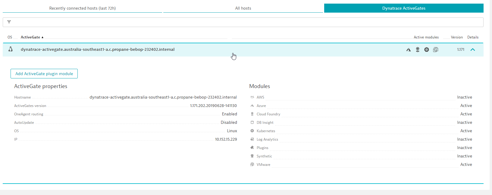
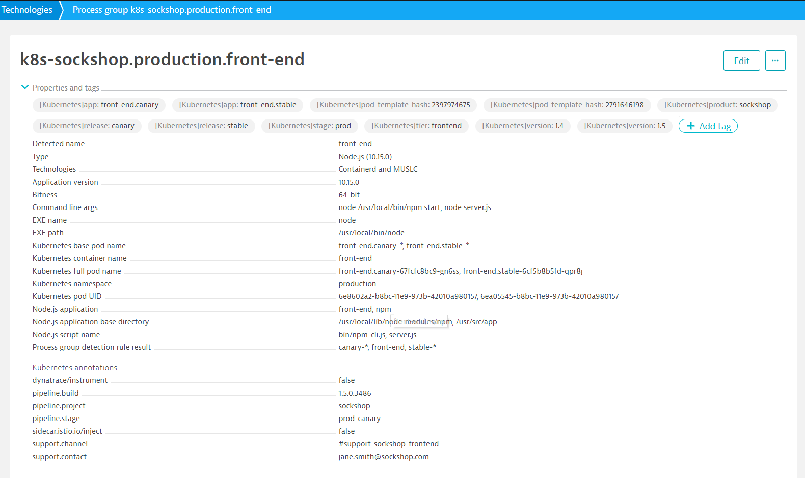
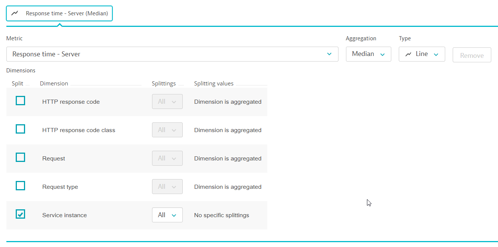
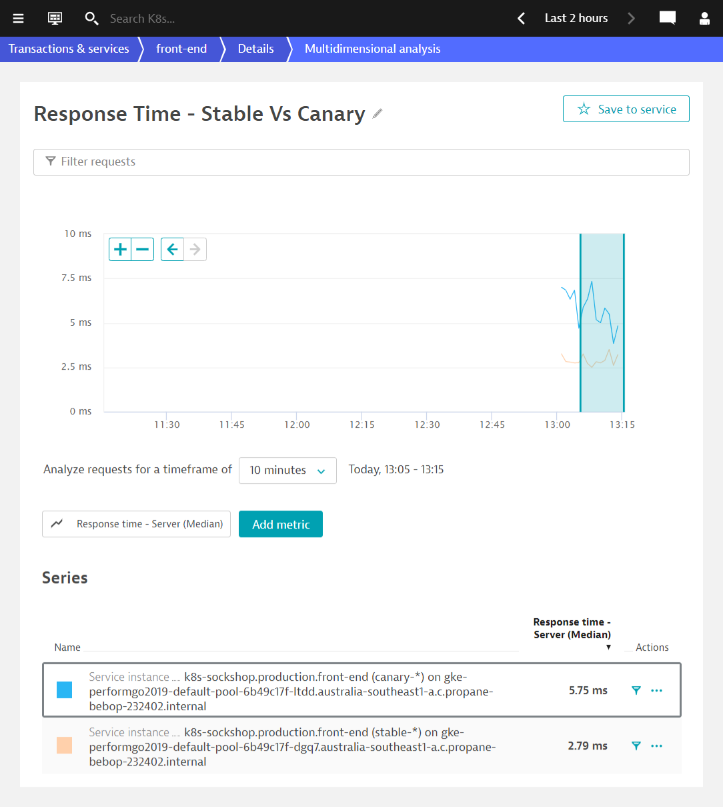
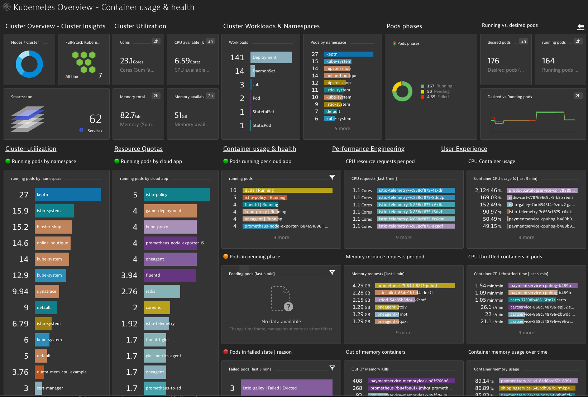
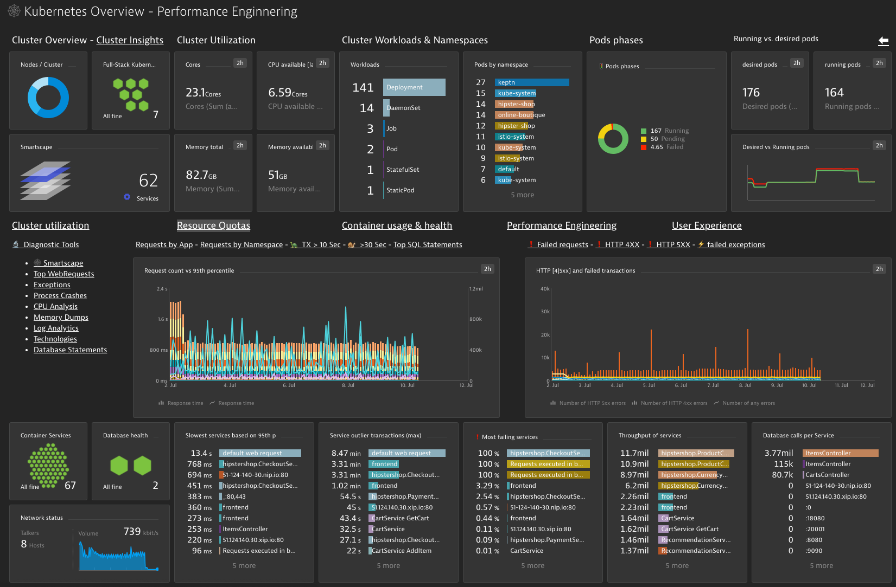
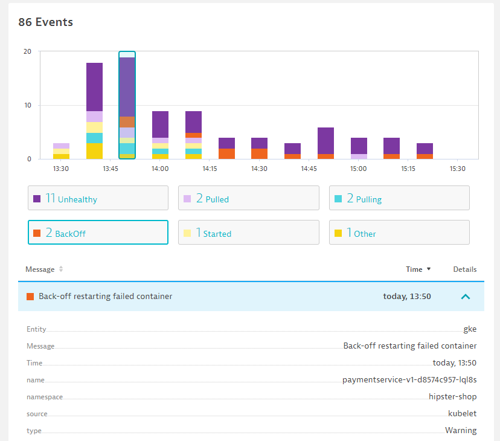
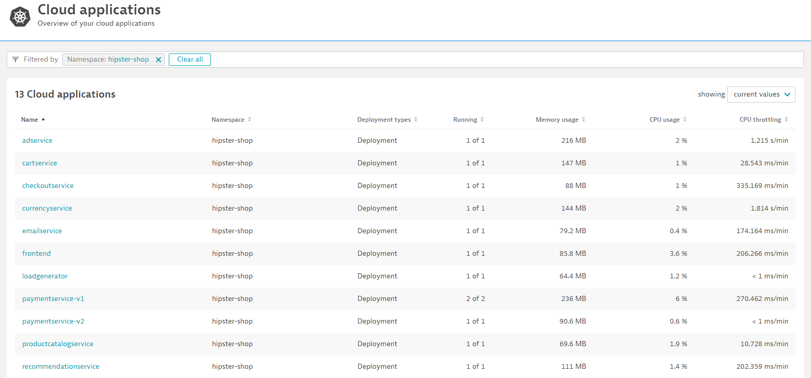

このリポジトリには、Hands-On Kubernetes Sessionのラボが含まれています。今回のハンズオンでは、AWSで動作するKubernetesインスタンスを使用しますが、他のプラットフォームでも動作します。
ハンズオンのために、参加者のためにステップを自動化し、シームレスにします。
事前準備
学習内容
- Helm Chartを介したDynatrace OperatorのKubernetesへの展開
- DynatraceにKubernetesを統合する
- Kubernetesの自動ダッシュボードを見る
- Kubernetesのラベルとアノテーション
- Kubernetesのプロセスグループネーミングとサービスネーミング
- DynatraceでKubernetesビューを見る
メール内のリンクをクリックして、割り当てられたDynatraceテナントにログインします。
Deploy Dynatrace -> Start installation -> Kubernetesを開きます。
Helm 3のインストール
OneAgent Operatorは、様々なkubernetesのデプロイメント戦略によってインストールすることができます。UIからの指示に従って、まずHelm 3をセットアップします。
以下のコマンドを使用して、Helm 3をインストールします。プロンプトが表示されたら、ウェルカムメールに記載されているadminパスワードを入力します。
sudo snap install helm --classic
DynatraceでAPIとPaaSのトークンの取得
画面の指示に従って、APIトークンとPaaSトークンを作成してください。 APIトークンには必要なパーミッションが自動的に設定されています。 作成後、両方のdrop-down fieldsからnewly created tokensを選択してください。 その他のコマンドにも必要なステップがあらかじめ入力されています。
OneAgent Helm Repoの追加
セットアップの手順に従って、以下のコマンドを実行してください。
helm repo add dynatrace https://raw.githubusercontent.com/Dynatrace/helm-charts/master/repos/stable
kubectl create namespace dynatrace
values.yamlの作成と適用
以下のコマンドを実行して、values.yamlという新しいファイルを作成します。
nano values.yaml
内容をコピーしてDyntraceのテナントに貼り付け、Ctrl-Xの後にYとEnterでファイルを保存します。
EXAMPLE
platform: "kubernetes"
oneagent:
name: "oneagent"
apiUrl: "https://mou612.managed-sprint.dynalabs.io/e/<ENVIRONMENT ID>/api"
args:
- --set-app-log-content-access=true
skipCertCheck: false
enableIstio: true
secret:
apiToken: "<API KEY>"
paasToken: "<PAAS KEY>"
次のコマンドをコピーして、values.yamlを適用し、OneAgentをKubernetesにデプロイします。
helm install dynatrace-oneagent-operator \
dynatrace/dynatrace-oneagent-operator -n\
dynatrace --values values.yaml
成功すれば、以下のようにSTATUS: deployedというポジティブな出力が得られるはずです。
NAME: dynatrace-oneagent-operator
LAST DEPLOYED: Thu Aug 13 01:25:26 2020
NAMESPACE: dynatrace
STATUS: deployed
REVISION: 1
TEST SUITE: None
NOTES:
Thank you for installing dynatrace-oneagent-operator.
Your release is named dynatrace-oneagent-operator.
⚠️ トラブルシューティングの手順
すべてがうまくいっていれば、Show Deployment statusをクリックすると、ホストが表示されます。
Sockshopサンプルアプリの再起動
様々なプロセスが自動的に検出されているのがわかりますが、Dynatraceはそれらを再起動するよう促します。これは、コードを変更せずに自動的にインストルメントを行うために必要です。
以下のコマンドを実行して、DevとProductionのサービスを循環させます。
kubectl delete pods --all -n dev
kubectl delete pods --all -n production
アクティブゲートの設定
- Dynatraceの左メニューにあるDeploy Dynatraceをクリックします。
- ページの下部にあるInstall Activegateをクリックします。
- Linuxをクリックします。
- ステップ2をコピーして、シェルターミナルにペーストします。
- ステップ4をコピーし、"sudo"を追加します。(rootとしてインストール)をシェルターミナルに追加します。 プロンプトが表示されたら、ウェルカムメールに記載されているadminパスワードを入力します。
完了すると、Deployment StatusにActivegateが表示されます。

K8S概要ダッシュボードの設定
Settings -> Process and Containers -> Process group detection -> Enable Cloud Application and workload detectionを開きます。

サービス・アカウントとクラスタ・ロールの作成
Kubernetes APIにアクセスするためのサービスアカウントとクラスタロールを作成します。これにより、Kubernetes APIでの認証に必要なベアラートークンが作成されます。シェルターミナルで以下のスニペットを使用します。
kubectl apply -f https://www.dynatrace.com/support/help/codefiles/kubernetes/kubernetes-monitoring-service-account.yaml
Kubernetesインテグレーションのセットアップ
Settings -> Cloud and Virtualization -> Kubernetes -> Connect new clusterを開きます。
Kubernetes APIのURLの取得
以下のコマンドを入力し、それをコピーしてKubernetes API URLに設定します。
kubectl get ing k8-api-ingress | grep -oP 'api.kubernetes[^[:blank:]]*'
Bearer Tokenの取得
Kubernetes Bearer Token**のために、以下のコマンドを入力し、コピーしてください。
kubectl get secret $(kubectl get sa dynatrace-monitoring -o jsonpath='{.secrets[0].name}' -n dynatrace) -o jsonpath='{.data.token}' -n dynatrace | base64 --decode &

- 接続の名前を入力します。例：Kubernetes。
- Kubernetes API URL Target**」を入力します。
- API URLの前に https:// を付けます。
- Kubernetes Bearer Token**を入力します。
- APIサーバーとの通信に有効な証明書を要求する」を無効にします。
- 別のイベントフィールドセレクターを追加します。
- フィールドセレクターの名前には
Non-nodeを使用します。 - フィールドセレクターの式には
involvedObject.kind!=Nodeを使用し、 Save します。 - イベントの監視**をオンにする
- Connect**」をクリックします。
接続に成功したら、左メニューの「Kubernetes」をクリックし、KubernetesのUIを見てみましょう。
Sockshopアプリを再起動すると、Dynatraceにサービスが表示されるようになります。
~/dtacmworkshop/manifests/sockshop-app/production/front-end.ymlを参考にして、Dynatraceが自動的にアノテーションとラベルをピックアップするように設定したいと思います。
apiVersion: extensions/v1beta1
kind: Deployment
metadata:
name: front-end.stable
namespace: production
spec:
replicas: 1
template:
metadata:
annotations:
sidecar.istio.io/inject: "false"
dynatrace/instrument: "true"
pipeline.stage: prod-stable
pipeline.build: 1.4.0.7424
pipeline.project: sockshop
support.contact: "jane.smith@sockshop.com"
support.channel: "#support-sockshop-frontend"
labels:
app: front-end.stable
stage: prod
release: stable
version: "1.4"
tier: "frontend"
product: "sockshop"
サービスアカウントの視聴者の役割
OneAgentはポッドサービスアカウントを使用して、Kubernetes REST APIを介してそのメタデータを照会します。 サービスアカウントにアクセスするには、viewer roleが付与されている必要があります。 CLIで、production projectに対して以下のコマンドを実行します。
kubectl create rolebinding serviceaccounts-view --clusterrole=view --group=system:serviceaccounts:production --namespace=production
この手順を dev プロジェクト にも繰り返してください。
kubectl create rolebinding serviceaccounts-view --clusterrole=view --group=system:serviceaccounts:dev --namespace=dev
Dynatraceが変更をピックアップするのを待ちます。
検証
作業が完了したら、Dynatraceで変更を検証することができます。

環境変数の追加
シェルターミナルで以下のコマンドを実行して、環境変数を追加します。
nano ~/dtacmworkshop/manifests/sockshop-app/production/front-end.yml
インデントが正しく行われているか、エラープロンプトが表示されていないかを確認してください。
env:
- name: DT_TAGS
value: "product=sockshop"
- name: DT_CUSTOM_PROP
value: "SERVICE_TYPE=FRONTEND"
修正したファイルをCtrl-X、Y、Enterで保存し、以下のコマンドを実行して変更を再適用します。
kubectl apply -f ~/dtacmworkshop/manifests/sockshop-app/production/front-end.yml
wget -O- https://raw.githubusercontent.com/Dynatrace-APAC/Workshop-Kubernetes/master/recycle-sockshop-frontend.sh | bash
検証
作業が完了したら、Dynatraceで変更を検証することができます。
プロセスグループのネーミングルール
Settings -> Processes and containers -> Process group namingを開き、Add a new ruleをクリックします。
ルールに名前を付けてください。例: Kubernetes Project.Namespace.Container
フォーマットの入力: k8s-{ProcessGroup:Kubernetes:pipeline.project}.{ProcessGroup:KubernetesNamespace}.{ProcessGroup:KubernetesContainerName}
条件のドロップダウンで、プロパティのKubernetes namespaceと条件のexistsを選択します。
Previewをクリックすると、マッチングしたエンティティが表示されます。
ポップアップのCreate RuleとSave Changesをクリックします。
検証
作業が完了したら、Dynatraceで変更を検証することができます。
サービス名の命名規則
Settings -> Server-side service monitoring -> Service naming rulesを開き、Add a new ruleをクリックします。
ルールに名前を付けてください。例: Kubernetes Project.Namespace.Container
フォーマットの入力: {Service:DetectedName}.{ProcessGroup:KubernetesNamespace}
条件のドロップダウンで、プロパティのKubernetes namespaceと条件のexistsを選択します。
Previewをクリックすると、マッチングしたエンティティが表示されます。
ポップアップのCreate RuleとSave Changesをクリックします。
検証
作業が完了したら、Dynatraceで変更を検証することができます。
カナリア・リリースのデプロイ
以下のコマンドを実行して、カナリアのリリースを開始します。
kubectl apply -f https://raw.githubusercontent.com/Dynatrace-APAC/Workshop-Kubernetes/master/manifests/sockshop-app/canary/front-end-canary.yml
kubectl get pods -n production -o wideを実行すると、フロントエンドサービスのstableとcanaryの両方のリリースが実行されていることがわかります。
1-2分待ってから、Dynatraceでサービスを確認します。本番環境では、安定版と限定版の2つのサービスがあります。 モニタリングのためには、同じサービスを使用する必要があります。

プロセス検出ルール設定
Dynatraceコンソールで、設定->プロセスとコンテナ->プロセスグループ検出に入ります。
Cloud Application and Workload Detectionセクションを展開します。
ドキュメントによると、プロセスグループを選択するためには、DT-ContainerBoundariesAffectedを使用して、クラウドアプリケーションとワークロードの検出を無効にし、ルールベースのタグ機能を有効にする必要があります。
プロセスグループ検出ルール**セクションを展開します。
検出ルールの追加」をクリックします。
process property を選択して、プロセスを分離します。

このルールは、production only (namespace=production)で動作するポッドに適用したいと思います。
また、ポッド名の "."の後の識別子を抽出します。 ポッド名には、区別するために ".stable "または ".canary "が付いていることを覚えておいてください。

以下のコマンドを実行して、安定版とカナリア版のフロントエンドポッドをリサイクルしてください。プロセス検出ルールは、プロセス起動時に適用されます。
wget -O- https://raw.githubusercontent.com/Dynatrace-APAC/Workshop-Kubernetes/master/recycle-sockshop-frontend.sh | bash
Dynatrace内では、プロセスグループが統合されていることがわかります。

サービスはまだ個々のサービスとして検出されており、同様にマージすることができます。
設定 -> サービスのマージ -> マージされたサービスの作成を選択します。

検証

サービスが1つに統合されたことで、モニターのStableとCanaryの応答を表示できるようになりました。
Create Chartを選択して、多次元解析ビューを作成します。

Response Time - Serverを選択し、Dimension SplittingとしてService Instanceを選択します。

BizOps Configuratorによるダッシュボードの設定
BizOps ConfiguratorによるKubernetes Dashboardsの自動作成を利用する予定です。
トークンに以下のようなパーミッションを設定します。
- 問題およびイベントフィード、メトリクス、トポロジーへのアクセス
- 設定の読み込み
- 設定の書き出し
- ユーザーセッション
Follow the preloaded setup at
- tenantUrlと API-Tokenの入力
- クリック Next. (The persona, usecase and workflow are already selected for you.)
- クリック Done.
Kubernetes Overview

クラスターの使用率
Kubernetesのクラスタ使用率をご覧ください。全ノードのCPUとMemoryのRequestと制限を時間軸で、ネームスペースで分割しています。

リソースクオータ
ネームスペースに割り当てられているKubernetesのリソースクォータ（MemoryとCPU）の概要と使用状況を把握できます。 
コンテナの使用状況と健康状態
クラスタ内のPodの健全性とフェーズを把握します。メモリやCPUの使用率、どのポッドがスロットルされているか、障害が発生しているか、スケジュールが保留されているかなどを確認します。また、Out-of-memory killed コンテナがあるかどうかも確認します。

パフォーマンスエンジニアリング
開発者や SRE エンジニアが、クラスター上の各アプリ、ポッド、各トランザクションのパフォーマンスを理解し、改善するために必要な情報を提供します。応答時間のパーセンタイル、低速トランザクション、マイクロサービスごとのデータベース実行、ネットワーク使用率などを表示します。アプリのラベルや名前空間などでトランザクションをフィルタリングできます。

ユーザーエクスペリエンス
エンドユーザーは満足していますか？アプリケーションのエンゲージメント、エクスペリエンス、ユーザー行動はどうですか？すべてのアプリケーションとユーザーのインサイトを1つのインスタンスで取得できます。

Kubernetes Viewの様々な機能（Cluster Utilization、Cluster Workloads、K8S Eventsなど）について説明します。

Kubernetes Clusterの利用状況を分析する
- マウスオーバーして、CPUとMemoryの使用率をMin / Maxで表示します。
- Analyze Nodesをクリックすると、各ノードの詳細が表示されます。

Kubernetes Cluster Workloadsの分析
- Kubernetesコントローラに分散して実行されているワークロードとポッドに注目してください

Kubernetesのイベントを分析する
- イベントの種類に注目 BackOff, Unhealthy

Kubernetesの名前空間を分析する
- hipster-shop**をクリックして、各種kubernetesサービス（クラウドアプリケーション）にドリルダウンします。

クラウドアプリケーションをクリックして探索
- 各アプリケーションをクリックすると、それを支える技術が見えてきます。

www.DeepL.com/Translator（無料版）で翻訳しました。
このラボを楽しんでいただき、お役に立てれば幸いです。ご意見、ご感想をお待ちしております。